台湾修行の旅、お次はググッと北上して台湾中部の苗栗県に移動する。
ここに凄い寺があるから行ってみて！というタレコミがあったので行ってみることにした。
お寺の名前は
慈雲寺。
最寄りの駅の観光案内の看板に写真入りで紹介されているお寺だった。
地元では有名なお寺なのね。
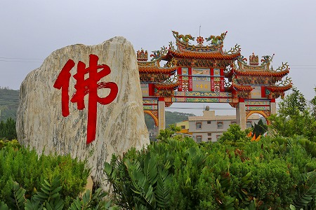
比較的大きなお寺のようだ。
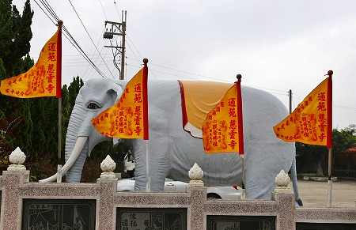
入り口の象さんの意図を図りかねていると…
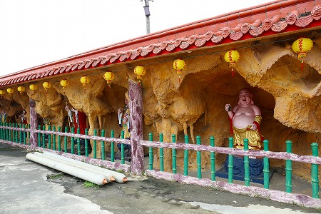
羅漢さんなどが並んでいるギャラリーが。
洞窟風なのに瓦屋根という斬新な手法だ。
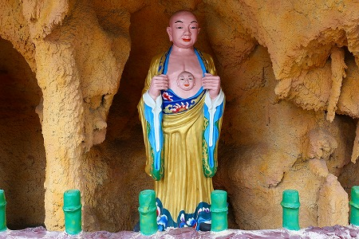
お腹から顔が出ているお馴染みラゴラ尊者や。
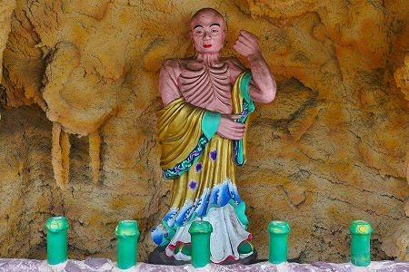
やけに腕の太い尊者などが出迎えてくれた。
お察しの通り、この寺はコンクリート像がたくさんあるお寺なのだ。
まあ、それ自体は
台湾では標準装備と言っても過言ではないのでいちいち喜んではいられないのだが。
で、視線を横パンしてみると…
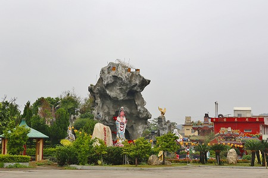
こんな光景が現れるのであった。
右手の2階建ての赤い建物（本堂）よりも高い人工の岩山の下に観音サマが立っている。
おおお、面白そうじゃないか！
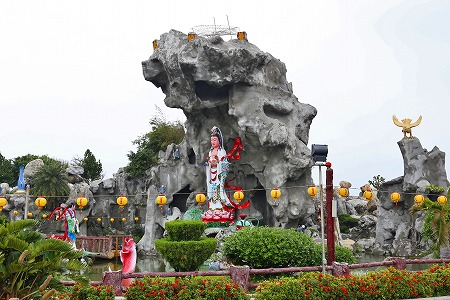
岩山の天辺には
謎のアンテナが設置されている。
恐らく天界からのありがた〜い波動か何かをキャッチしているのだろう。
あるいは衛星からのBS波かもしれない。
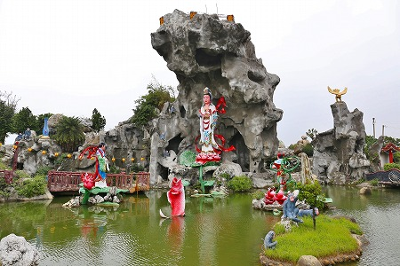
岩の前は池になっており、様々なオブジェが配されている。
中央に観音サマ、その前に観音サマを拝むような恰好で男女の像が。
先ほど訪れた五年千歳公園の観音サマと同じ構成だな。
その他、鯉、蓮などカラフルな造形物が。
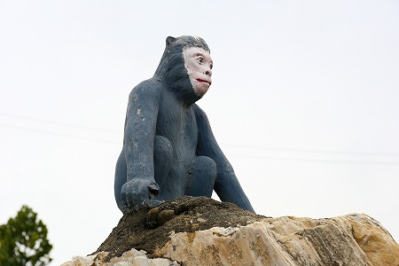
岩山の上には猿も。
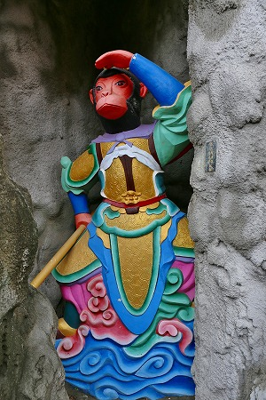
岩山の隙間からは孫悟空が。
池沿いの歩道を歩いていくと、岩山の裏手から山の中に入れるようだ。
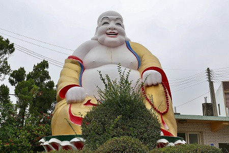
布袋サマの前を通っていざ岩山へ。
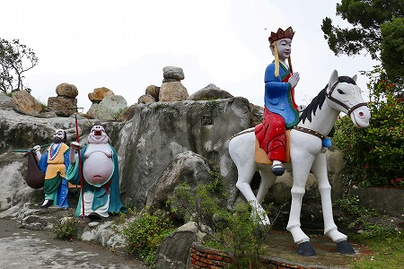
あ、悟空以外の登場人物もいた。
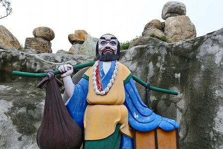
沙悟浄、チョット怖い…。
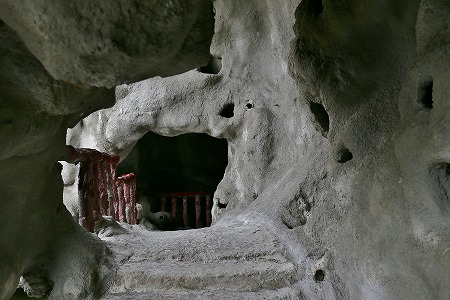
で、岩山の中に入る。
岩山というより正確にはコンクリート吹き付けの人工の築山である。
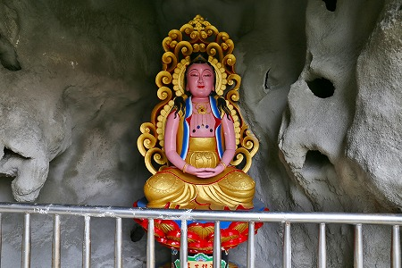
コンクリ吹き付け特有のぐにゃんとした質感の人工洞窟を進んでいくとカラフルな仏様が。
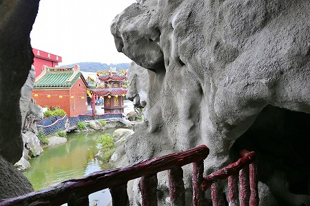
岩山の合間からは池が見える。
小規模な洞窟だったが、中に入れるとは思わなかったのでチョットだけ得した気分。
洞窟を抜けると池の畔からは見えなかった男女像が正面から見ることが出来る。
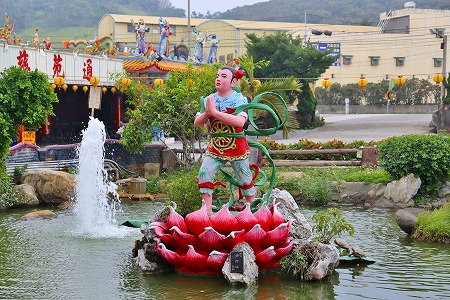
男性の方は二枚目。
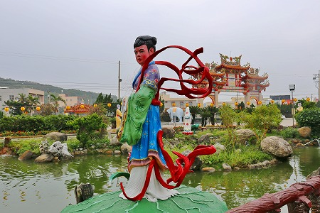
女性のほうは…微妙。
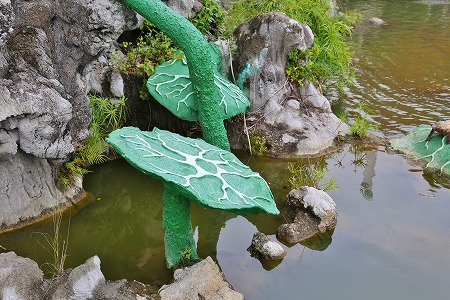
池の中にある人造の蓮の葉。悪夢にでてきそうな植物。
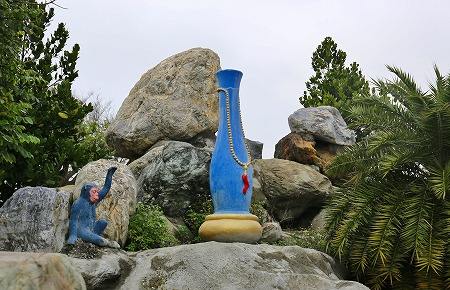
何故か岩山のあちこちに猿がいた。
花果山を表しているのだろうか。
正直言って直前に訪問した五年千歳公園の縮小版といった感じだったので、あまりテンションは上がらなかった。
ただ、今改めて見てみると中々面白い寺だったなあ。
お寺の方と話をしていたらこの寺に日本人が来ることは稀だとか。
数か月前にやたら写真を撮りまくっていた日本人がいたが、あれは貴方のトモダチか？と聞かれた。
…多分このお寺を教えてくれた方だと思います…。
情報提供はコウゲさんです。ありがとうございました。
次へGOGO！